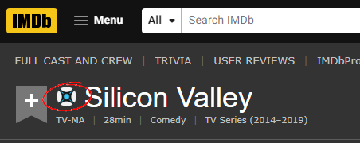
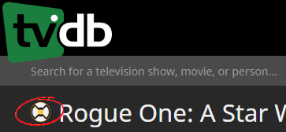

Configure connections, integrations, and behavior for your Servarr instances.
Settings
These settings configure how this extension will connect to your Servarr instances.
If an API key is entered and the "Auto populate from API" version is enabled on the advanced settings page, then the advanced settings will be configured automatically.
Auto population will only work if the API call works, otherwise default values will be used.
Advanced settings
These settings affect how the extension identifies the search page and input field within your Servarr instances.
If an API key is entered and the "Auto populate from API" switch is enabled these values will be derived automatically. Otherwise default or manually entered values are used.
Disable auto population to edit the fields manually if detection fails and please raise an issue with your instance/version so it can be supported.
Site integrations
When enabled the extension attempts to surface a direct search link within your Servarr instance.


Custom icon settings
Override integration injection points by showing a custom floating or anchored icon.
An example icon will appear here while this tab is open if custom icons are enabled.
If multiple elements match the usual selector fallback icon injection logic will be used instead of the custom icon.
Backup and restore
Export your current settings to a JSON file, or restore them from a previously saved backup.
Restoring merges settings over the top of your current configuration. You'll be asked to confirm before applying changes.
Support this project
If you like this extension you can help sustain its maintenance and new feature development.
Below are a few ways you can show support.
Star on GitHub
Starring the repository helps others discover it and is a quick, zero-cost way to contribute.